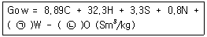
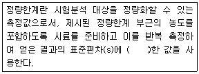
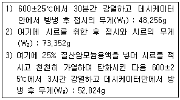
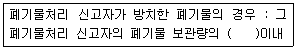
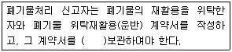
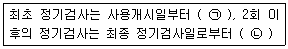

폐기물처리기사 (2017-05-07 기출문제)
1과목: 폐기물 개론
1. 폐기물의 수거형태 중 인부가 각 가정에 방문하여 수거하는 방식은?
- 타종수거
- 문전수거
- 콘테이너수거
- 대형쓰레기통수거
(정답률: 84%)

2. 서비스를 받는 사람들의 만족도를 설문조사하여 지수로 나타내는 청소상태 평가법의 약자로 옳은 것은?
- SEI
- CEI
- USI
- ESI
(정답률: 83%)
3. 도시폐기물의 유기성 성분 중 셀룰로오스에 해당하는 것은?
- 6탄당의 중합체
- 5탄당과 6탄당의 중합체
- 아미노산 중합체
- 방향환과 메톡실기를 포함한 중합체
(정답률: 77%)
4. 가정용쓰레기를 수거할 때 쓰레기통의 위치와 구조에 따라서 수거효율이 달라진다. 다음 중 수거효율이 가장 좋은 것은?
- 집 밖 이동식
- 집 안 이동식
- 벽면 부착식
- 집 밖 고정식
(정답률: 83%)
5. 우리나라 폐기물관리법에서는 폐기물을 고형물 함량에 따라 액상, 반고상, 고상 폐기물로 구분하고 있다. 액상폐기물의 기준으로 옳은 것은?
- 고형물 함량이 13% 미만인 것
- 고형물 함량이 5% 미만인 것
- 고형물 함량이 10% 미만인 것
- 고형물 함량이 15% 미만인 것
(정답률: 82%)
6. 함수율 50%인 폐기물을 건조시켜 함수율이 20%인 폐기물로 만들려면 쓰레기 톤당 얼마의 수분을 증발시켜야 하는가? (단, 비중은 1.0 기준)
- 255 kg
- 275 kg
- 355 kg
- 375 kg
(정답률: 74%)
7. 다음 중 폐기물의 거의 완전 연소된다는 가정하에서 발열량을 구하는 식은?
- Dulong식
- Sumegi식
- Rosin-Rammler식
- Gumz식
(정답률: 89%)
8. 전과정평가(LCA)의 절차로 옳은 것은?
- 목록분석 → 목적 및 범위 설정 → 영향평가 → 결과해석
- 목적 및 범위 설정 → 목록분석 → 영향평가 → 결과해석
- 목적 및 범위 설정 → 목록분석 → 결과해석 → 영향평가
- 목록분석 → 목적 및 범위 설정 → 결과해석 → 영향평가
(정답률: 75%)
9. 폐기물 파쇄기에 대한 설명으로 틀린 것은?
- 회전드럼식 파쇄기는 폐기물의 강도차를 이용하는 파쇄장치이며 파쇄와 분별을 동시에 수행할 수 있다.
- 일반적으로 전단파쇄기는 충격파쇄기보다 파쇄속도가 느리다.
- 압축파쇄기는 기계의 압착력을 이용하여 파쇄하는 장치로 파쇄기의 마모가 적고 비용도 적다.
- 해머밀 파쇄기는 고정칼, 왕복 또는 회전칼과의 교합에 의하여 폐기물을 전단하는 파쇄기이다.
(정답률: 89%)
10. 폐기물의 일반적인 수거방법 중 관거(pipeline)를 이용한 수거방법이 아닌 것은?
- 캡슐수송 방법
- 슬러리수송 방법
- 공기수송 방법
- 모노레일수송 방법
(정답률: 82%)
11. 돌, 코크스 등의 불투명한 것과 유리 같은 투명한 것의 분리에 이용되는 방식인 광학선별에 관한 설명으로 틀린 것은?
- 입자는 기계적으로 투입된다.
- 선별입자는 와전류형성으로 제거된다.
- 광학적으로 조사된다.
- 조사결과는 전기전자적으로 평가된다.
(정답률: 79%)
12. 습량기준 회분량이 16%인 폐기물의 건량기준회분량(%)은? (단, 폐기물의 함수율 = 20%)
- 20
- 18
- 16
- 14
(정답률: 67%)
13. 도시폐기물의 성상분석 절차로 가장 적절한 것은?
- 시료 채취 - 절단 및 분쇄 - 건조 - 물리적 조성 분류 - 겉보기밀도 측정 - 화학적 조성 분석
- 시료 채취 - 절단 및 분쇄 - 건조 - 겉보기밀도측정 - 물리적 조성 분류 - 화학적 조성 분석
- 시료 채취 - 겉보기밀도 측정 - 건조 - 절단 및 분쇄 - 물리적 조성 분류 - 화학적 조성 분석
- 시료 채취 - 겉보기밀도 측정 - 물리적 조성 분류 - 건조 - 절단 및 분쇄 - 화학적 조성 분석
(정답률: 82%)
14. 30만 인구규모를 갖는 도시에서 발생되는 도시 쓰레기량이 년간 40만톤이고, 수거 인부가 하루 500명이 동원되었을 때 MHT는? (단, 1일 작업시간 = 8시간, 연간 300일 근무)
- 3
- 4
- 6
- 7
(정답률: 69%)
15. 폐기물의 관리단계 중 비용이 가장 많이 소요되는 단계는?
- 중간처리 단계
- 수거 및 운반단계
- 중간처리된 폐기물의 수송단계
- 최종 처리단계
(정답률: 83%)
16. 폐기물의 밀도가 400 kg/m3인 것을 800kg/m3의 밀도가 되도록 압축시킬 때 폐기물의 부피변화는?
- 30% 증가
- 30% 감소
- 40% 증가
- 50% 감소
(정답률: 88%)
17. 도시에서 폐기물 발생량이 185000 톤/년, 수거 인부는 1일 550명, 인구는 250000명이라고 할 때 1인 1일 폐기물 발생량(kg/인·day)은?
- 2.03
- 2.35
- 2.45
- 2.77
(정답률: 74%)
18. 폐기물 발생량 예측방법 중에서 각 인자들의 효과를 총괄적으로 나타내어 복잡한 시스템의 분석에 유용하게 적용할 수 있는 것은?
- 경향법
- 다중회귀모델
- 동적모사모델
- 인자분석모델
(정답률: 75%)
19. 사업장에서 배출되는 폐기물을 감량화시키기 위한 대책으로 가장 거리가 먼 것은?
- 원료의 대체
- 공정 개선
- 제품내구성 증대
- 포장횟수의 확대 및 장려
(정답률: 90%)
20. 유기성폐기물의 퇴비화에 있어서 초기 원료가 갖추어야 할 조건으로 가장 거리가 먼 것은?
- 적정 입자크기가 25~75 mm가 적당하다.
- 공기공급은 50~200 L/min·m3이 적당하다.
- 초기 수분함량은 20~30%가 적당하다.
- 초기 C/N비는 25~50이 적당하다.
(정답률: 71%)
2과목: 폐기물 처리 기술
21. 점토차수층과 비교하여 합성수지계 차수막에 관한 설명으로 틀린 것은?
- 경제성 : 재료의 가격이 고가이다.
- 차수성 : Bentonite 첨가 시 차수성이 높아진다.
- 적용지반 : 어떤 지반에도 가능하나 급경사에는 시공 시 주의가 요구된다.
- 내구성 : 내구성은 높으나 파손 및 열화위험이 있으므로 주의가 요구된다.
(정답률: 75%)
22. 처리용량이 50 kL/day인 혐기성 소화식 분뇨처리장에 가스저장탱크를 설치하고자 한다. 가스 저류 시간을 8시간으로 하고 생성가스량을 투입 분뇨량의 6배로 가정한다면, 가스탱크의 용량(m3)은?
- 90
- 100
- 110
- 120
(정답률: 65%)
23. 고형화처리방법 중 가장 흔히 사용되는 시멘트 기초법의 장점에 해당하지 않는 것은?
- 원료가 풍부하고 값이 싸다.
- 다양한 폐기물을 처리할 수 있다.
- 폐기물의 건조나 탈수가 필요하지 않다.
- 낮은 pH에서도 폐기물 성분의 용출가능성이 없다.
(정답률: 67%)
24. 함수율이 97%인 잉여슬러지 120 m3가 농축되어 함수율이 94%로 되었을 때 농축 잉여슬러지의 부피(m3)는? (단, 슬러지 비중은 1.0)
- 40
- 50
- 60
- 70
(정답률: 68%)
25. 시멘트 고형화처리에 대한 설명으로 가장 거리가 먼 것은?
- 폐기물의 오염물질 용해도가 감소한다.
- 무기적 방법이며 대표적인 것으로 시멘트 기초법, 석회기초법, 자가시멘트법이 있다.
- 표면적 증가에 따른 운반비용이 증가한다.
- 폐기물의 독성이 감소한다.
(정답률: 67%)
26. 매립지 가스발생량의 추정방법으로 가장 거리가 먼 것은?
- 화학양론적인 접근에 의한 폐기물 조성으로부터 측정
- BMP(Biological Methane Potential)법에 의한 메탄가스 발생량 조사법
- 라이지미터(Lysimeter)에 의한 가스발생량 추정법
- 매립지에 화염을 접근시켜 화력에 의해 추정하는 방법
(정답률: 78%)
27. 매립지 기체 발생단계를 4단계로 나눌 때 매립 초기의 호기성 단계(혐기성 전단계)에 대한 설명으로 틀린 것은?
- 폐기물내 수분이 많은 경우에는 반응이 가속화된다.
- O2가 대부분 소모된다.
- N2가 급격히 발생한다.
- 주요 생성기체는 CO2이다.
(정답률: 67%)
28. 육상 매립지로서 적합하지 않은 장소는?
- 표층수, 복류수가 없는 곳
- 단층 지대
- 지지력 2400~2900 kg/m2인 곳
- 지하수위 1.5m 이상인 곳
(정답률: 62%)
29. 휘발성 유기화합물(VOCs)의 물리·화학적 특징으로 틀린 것은?
- 증기압이 높다.
- 물에 대한 용해도가 높다.
- 생물농축계수(BCF)가 낮다.
- 유기탄소 분배계수가 높다.
(정답률: 42%)
30. 1일 쓰레기의 발생량이 10톤인 지역에서 트렌치 방식으로 매립장을 계획한다면 1년간 필요한 토지 면적(m2/년)은? (단, 도랑의 깊이 = 2.5m, 매립에 따른 쓰레기의 부피 감소율 = 60%, 매립 전 쓰레기 밀도 = 400 kg/m3, 기타조건은 고려하지 않음)
- 1153
- 1460
- 2410
- 2840
(정답률: 72%)
31. 침출수의 혐기성 처리에 대한 설명으로 틀린 것은?
- 고농도의 침출수를 희석없이 처리할 수 있다.
- 온도, 중금속 등의 영향이 호기성 공정에 비해 작다.
- 미생물의 낮은 증식으로 슬러지 발생량이 작다.
- 호기성 공정에 비해 낮은 영양물 요구량을 가진다.
(정답률: 66%)
32. 매립공법 중 내륙매립공법에 관한 내용으로 틀린 것은?
- 셀(cell)공법 : 쓰레기 비탈면의 경사는 15~25%의 구배로 하는 것이 좋다.
- 셀(cell)공법 : 1일 작업하는 셀 크기는 매립처분량에 따라 결정된다.
- 도랑형 공법 : 파낸 흙이 항상 남는데 이를 복토재로 이용할 수 있다.
- 도랑형 공법 : 쓰레기를 투입하여 순차적으로 육지화하는 방법이다.
(정답률: 67%)
33. 악취성 물질인 CH3SH를 나타낸 것은?
- 메틸오닌
- 다이메틸설파이드
- 메틸메르캅탄
- 메틸케톤
(정답률: 70%)
34. BOD가 15000 mg/L, Cl-이 800 mg/L인 분뇨를 희석하여 활성슬러지법으로 처리한 결과 BOD가 60mg/L, Cl-이 40 mg/L 이었다면 활성슬러지법의 처리효율(%)은? (단, 희석수 중에 BOD, Cl-은 없음)
- 90
- 92
- 94
- 96
(정답률: 54%)
35. 방사성 폐기물에 대한 설명으로 틀린 것은?
- 10 Rem 이상의 고준위 폐기물과 10 Rem 이하의 저준위 폐기물로 구분된다.
- 방사성폐기물은 폐기물관리법에 의하여 관리되고 있다.
- 이들 폐기물은 감용/농축이나 고화처리를 하여 격리처분하고 있다.
- 외국의 경우 저준위 방사성 폐기물은 해양투기나 육지보관을 실시한다.
(정답률: 71%)
36. 매립지에 흔히 쓰이는 합성 차수막의 종류인 CR(Neoprene)에 관한 내용으로 가장 거리가 먼 것은?
- 대부분의 화학물질에 대한 저항성이 높다.
- 마모 및 기계적 충격에 약하다.
- 접합이 용이하지 못하다.
- 가격이 비싸다.
(정답률: 66%)
37. 화학구조에 따른 활성탄의 흡착정도에 대한 설명으로 가장 거리가 먼 것은?
- 수산기가 있으면 흡착률이 낮아진다.
- 불포화 유기물이 포화 유기물보다 흡착이 잘 된다.
- 방향족의 고리수가 증가하면 일반적으로 흡착률이 증가한다.
- 방향족 내 할로겐족의 수가 증가하면 일반적으로 흡착률이 감소한다.
(정답률: 56%)
38. 퇴비화 과정의 영향인자에 대한 설명으로 가장 거리가 먼 것은?
- 슬러지 입도가 너무 작으면 공기유통이 나빠져 혐기성 상태가 될 수 있다.
- 슬러지를 퇴비화할 때 Bulking agent를 혼합하는 주목적은 산소와 접촉면적을 넓히기 위한 것이다.
- 숙성퇴비를 반송하는 것은 Seeding과 pH 조정이 목적이다.
- C/N비가 너무 높으면 유기물의 암모니아화로 악취가 발생한다.
(정답률: 77%)
39. 기계식 반응조 퇴비화 공법에 관한 설명으로 가장 거리가 먼 것은?
- 퇴비화가 밀폐된 반응조 내에서 수행된다.
- 일반적으로 퇴비화 원료물질의 성분에 따라 수직형과 수평형으로 나누어 퇴비화를 수행한다.
- 수직형 퇴비화 반응조는 반응조 전체에 최적조건을 유지하가 어려워 생산된 퇴비의 질이 떨어질 수 있다.
- 수평형 퇴비화 반응조는 수직형 퇴비화 반응조와 달리 공기흐름 경로를 짧게 유지할 수 있다.
(정답률: 54%)
40. 토양오염의 예방대책으로 가장 거리가 먼 것은?
- 광산 및 채석장의 침전지 설치
- 비료의 적정량 사용
- 토양오염 측정망 설치 운영
- 상하 토양의 치환
(정답률: 68%)
3과목: 폐기물 소각 및 열회수
41. 소각로의 부식에 대한 설명으로 틀린 것은?
- 150~320℃ 에서는 부식이 잘 일어나지 않고 노점인 150℃ 이하의 온도에서는 저온부식이 발생한다.
- 320℃ 이상에서는 소각재가 침착된 금속면에서 고온부식이 발생한다.
- 저온부식은 결로로 생성된 수분에 산성가스 등의 부식성가스가 용해되어 이온으로 해리되면서 금속부와 전기화학적 반응에 의한 금속염으로 부식이 진행된다.
- 480℃까지는 염화철 또는 알칼리철 황산염 분해에 의한 부식이고, 700℃까지는 염화철 또는 알칼리철 황산염 생성에 의한 부식이 진행된다.
(정답률: 62%)
42. 다이옥신(Dioxin)과 퓨란(Furan)의 생성기전에 대한 설명으로 옳지 않은 것은?
- 투입 폐기물내에 존재하던 PCDD/PCDF가 연소시 파괴되지 않고 배기가스 중으로 배출
- 전구물질(클로로페놀, 폴리염화바이페닐 등)이 반응을 통하여 PCDD/PCDF로 전환되어 생성
- 여러 가지 유기물과 염소공여체로부터 생성
- 약 800℃의 고온 촉매화반응에 의해 분진으로부터 생성
(정답률: 71%)
43. 폐기물의 소각에 따른 열 회수에 대한 설명으로 옳지 않은 것은?
- 회수된 열을 이용하여 전력만 생산할 경우 70~80%의 높은 에너지효율을 얻을 수 있다.
- 온수나 연소공기 예열 및 증기생산 등의 에너지 활용은 단순에너지 활용으로 소규모 소각방식에 적합하다.
- 열병합방식을 활용하면 에너지의 활용을 극대화 시킬 수 있다.
- 열회수장치는 고온연소가스와 냉각수나 공기 사이에서 대류, 전도, 복사열 전달현상에 의하여 열을 회수한다.
(정답률: 54%)
44. 연소에 있어 검뎅이의 생성에 대한 설명으로 가장 거리가 먼 것은?
- A중유 < B중유 < C중유 순으로 검뎅이가 발생한다.
- 공기비가 매우 적을 때 다량 발생한다.
- 중합, 탈수소축합 등의 반응을 일으키는 탄화수소가 적을수록 검뎅이는 많이 발생한다.
- 전열면 등으로 발열속도보다 방열속도가 빨라서 화염의 온도가 저하될 때 많이 발생한다.
(정답률: 72%)
45. 소각로 배출가스 중 염소(Cl2)가스 농도가 0.5%인 배출가스 3000 Sm3/hr를 수산화칼슘 현탁액으로 처리하고자 할 때 이론적으로 필요한 수산화칼슘의 양(kg/hr)은? (단, Ca 원자량 = 40)
- 약 12.4
- 약 24.8
- 약 49.6
- 약 62.1
(정답률: 49%)
46. 소각 시 발생되는 황산화물(SOx)의 발생 방지법으로 틀린 것은?
- 저황 함유연료의 사용
- 높은 굴뚝으로의 배출
- 촉매산화법 이용
- 입자이월의 최소화
(정답률: 59%)
47. 우리나라 폐기물관리법상 소각시설의 설치 기준중 연소실의 출구온도로 옳지 않은 것은?
- 일반소각시설 - 850℃ 이상
- 고온소각시설 - 1100℃ 이상
- 열분해시설 - 1200℃ 이상
- 고온용융시설 - 1200℃ 이상
(정답률: 63%)
48. 착화온도에 관한 설명으로 옳지 않은 것은? (단, 고체연료 기준)
- 분자구조가 간단할수록 착화온도는 낮다.
- 화학적으로 발열량이 클수록 착화온도는 낮다.
- 화학반응성이 클수록 착화온도는 낮다.
- 화학결합의 활성도가 클수록 착화온도는 낮다.
(정답률: 77%)
49. 폐기물소각 시 완전한 연소를 위해 필요한 조건이 아닌 것은?
- 적절히 높은 온도
- 충분한 접촉시간과 혼합이 된 상태
- 충분한 산소 공급
- 적절한 유동매체 보충 공급
(정답률: 71%)
50. 폐기물의 원소조성이 다음과 같을 때 완전연소에 필요한 이론공기량(Sm3/kg)은? (단, 가연성분 : 70%(C = 50%, H = 10%, O = 35%, S = 5%), 수분 : 20%, 회분 : 10%)
- 3.4
- 3.7
- 4.0
- 4.3
(정답률: 60%)
51. 유동층연소의 단점 중 하나로는 부하변동에 따른 적응력이 나쁜 점이다. 이를 해결하기 위하여 연소율을 바꾸고자 할 때 적당하지 않은 것은?
- 층내의 연료비율을 변화시킨다.
- 공기분산판을 통합하여 층을 전체적으로 유동시킨다.
- 유동층을 몇 개의 셀로 분할하여 부하에 따라 작동시키는 수를 변화시킨다.
- 층의 높이를 변화시킨다.
(정답률: 47%)
52. 프로판(C3H8)의 고위발열량이 24300 kcal/Sm3일 때 저위발열량(kcal/Sm3)은?
- 22380
- 22840
- 23340
- 23820
(정답률: 69%)
53. 다단로소각로에 대한 설명으로 옳지 않은 것은?
- 신속한 온도반응으로 보조연료사용 조절이 용이하다.
- 다량의 수분이 증발되므로 수분함량이 높은 폐기물의 연소가 가능하다.
- 물리, 화학적으로 성분이 다른 각종 폐기물을 처리할 수 있다.
- 체류시간이 길어 휘발성이 적은 폐기물 연소에 유리하다.
(정답률: 66%)
54. 폐기물의 원소조성 성분을 분석해보니 C 51.9%, H 7.62%, O 38.15%, N 2.0%, S 0.33% 이었다면 고위발열량(kcal/kg)은? (단, Hh = 8100C + 34000(H-(O/8))+2500S)
- 약 8800
- 약 7200
- 약 6100
- 약 5200
(정답률: 60%)
55. 소각로에서 배출되는 비산재(fly ash)에 대한 설명으로 옳지 않은 것은?
- 입자크기가 바닥재보다 미세하다.
- 유해물질을 함유하고 있지 않아 일반폐기물로 취급된다.
- 폐열보일러 및 연소가스 처리설비 등에서 포집된다.
- 시멘트 제품 생산을 위한 보조원료로 사용 가능하다.
(정답률: 75%)
56. 연소설비의 열효율 강의에 대한 설명으로 틀린것은?
- 열효율 η=(공급 열/유효 열) ×100(%)로 표시한다.
- 공급열은 열수지에서 입열 전부를 취하는 경우와 연료의 연소열만을 취하는 경우가 있다.
- 유효열은 연소에 의한 생성열을 증발, 건조, 가열에 이용하는 경우 100% 이용은 불가능하다.
- 유효열은 복사전도에 의한 열손실, 배가스의 현열손실, 불완전연소에 의한 손실열 등을 공급열에서 뺀 값이다.
(정답률: 60%)
57. 사이클론(cyclone) 집진장치에 대한 설명으로 틀린 것은?
- 원심력을 활용하는 집진장치이다.
- 설치면적이 작고 운전비용이 비교적 적은 편이다.
- 온도가 높을수록 포집효율이 높다.
- 사이클론 내부에서 먼지는 벽면과 마찰을 일으켜 운동에너지를 상실한다.
(정답률: 72%)
58. 고체 및 액체연료의 이론적인 습윤연소 가스량을 산출하는 계산식이다. ㉠, ㉡ 값으로서 적당한 것은?

- ㉠ 1.12, ㉡ 1.32
- ㉠ 1.24, ㉡ 2.64
- ㉠ 2.48, ㉡ 5.28
- ㉠ 4.96, ㉡ 10.56
(정답률: 68%)
59. 폐기물 처리공정에서 소각공정과 열분해공정을 비교한 설명으로 틀린 것은?
- 소각공정은 산소가 존재하는 조건에서 시행되고, 열분해공정은 산소가 거의 없거나 무산소 상태에서 진행된다.
- 열분해공정은 소각공정에 비하여 배기가스량이 많다.
- 열분해공정은 소각공정에 비하여 NOx(질소산화물) 발생량이 적다.
- 소각공정은 발열반응이나 열분해공정은 흡열반응이다.
(정답률: 74%)
60. 공기비가 클 때 일어나는 현상으로 가장 거리가 먼 것은?
- 연소가스가 폭발할 위함이 커진다.
- 연소실의 온도가 낮아진다.
- 부식이 증가한다.
- 열손실이 커진다.
(정답률: 68%)
4과목: 폐기물 공정시험기준(방법)
61. 자외선/가시선 분광법으로 크롬을 측정할 때 시료 중 총 크롬을 6가크롬으로 산화시키는 데 사용되는 시약은?
- 과망간산칼륨
- 이염화주석
- 시안화칼륨
- 디티오황산나트륨
(정답률: 73%)
62. 폐기물로부터 유류 추출 시 에멀젼을 형성하여 액층이 분리되지 않을 경우, 조작법으로 옳은 것은?
- 염화제이철 용액 4mL를 넣고 pH를 7~9로 하여 자석교반기로 교반한다.
- 메틸오렌지를 넣고 황색이 적색이 될 때까지 (1+1)염산을 넣는다.
- 노말헥산층에 무수황산나트륨을 넣어 수분간 방치한다.
- 에멀젼층 또는 헥산층에 적당량의 황산암모늄을 넣고 환류냉각관을 부착한 후 80℃ 물중탕에서 가열 한다.
(정답률: 60%)
63. 유도결합플라즈마-원자발광분광법에 대한 설명으로 틀린 것은?
- 바닥상태의 원자가 이 원자 증기층을 투과하는 특유 파장의 빛을 흡수하는 현상을 이용한다.
- 일곤가스를 플라즈마 가스로 사용하여 수정발진식 고주파 발생기로부터 발생된 주파수 영역에서 유도코일에 의하여 플라즈마를 발생시킨다.
- 알곤플라즈마를 점등시키려면 테슬라코일에 방전 하여 알곤가스의 일부가 전리되도록 한다.
- 유도결합플라즈마의 중심부는 저온, 저전자 밀도가 형성되며 화학적으로 불활성이다.
(정답률: 55%)
64. 십억분율(Parts Per Billion)을 표시하는 기호는?
- %
- g/L
- ppm
- ㎍/L
(정답률: 76%)
65. 정량한계에 관한 내용으로 ( )에 옳은 것은?

- 3배
- 3.3배
- 5배
- 10배
(정답률: 76%)
66. 트리클로로에틸렌 정량을 위한 전처리 및 분석 방법에 대한 설명으로 틀린 것은?
- 휘발성이 있으므로 마개 있는 시험관이나 삼각 플라스크를 사용한다.
- 시료의 전처리 시 진탕기를 이용하여 6시간 연속 교반한다.
- 시료와 용매의 혼합액이 삼각플라스크의 용량과 비슷한 것을 사용하여 삼각플라스크 상부의 headspace를 가능한 적게 한다.
- 유지시간에 해당하는 크로마토그램의 피이크 높이 또는 면적을 측정하여 표준액 농도와의 관계선을 작성한다.
(정답률: 52%)
67. 시료의 전처리 방법과 사용되는 용액의 산 농도값과 일치하지 않는 것은?
- 질산에 의한 유기물분해 : 약 0.7N
- 질산-염산에 의한 유기물분해 : 약 0.5N
- 질산-황산에 의한 유기물분해 : 약 0.6N
- 질산-과염소산에 의한 유기물분해 : 약 0.8N
(정답률: 52%)
68. 시료의 수분함량이 85% 이상이면 용출시험 결과를 보정하는 이유는?
- 수분함량에 따라 중금속농도 분석오차가 다르기 때문에
- 수분함량에 따라 유기물 농도가 변하기 때문에
- 수분함량에 따라 소각 시 중금속 용출이 다르기 때문에
- 매립을 위한 최대 함수율 기준이 정해져 있기 때문에
(정답률: 61%)
69. 기체크로마토그래피를 이용한 유기인 분석에 관한 설명으로 가장 거리가 먼 것은?
- 검출기는 불꽃광도검출기(FPD)를 사용한다.
- 규산 칼럼 또는 실리카겔 칼럼을 사용하여 시료를 농축시킨다.
- 컬럼온도는 40~280℃로 사용한다.
- 유기인 화합물 중 이피엔, 파리티온, 메틸디메톤, 다이아지논, 펜토에이트의 측정에 적용된다.
(정답률: 56%)
70. 폐기물 시료에 대해 강열럄량과 유기물함량을 조사하기 위해 다음과 같은 실험을 하였다. 아래와 같은 결과를 이용한 강열감량(%)은?

- 약 74%
- 약 76%
- 약 82%
- 약 89%
(정답률: 66%)
71. 다름 조건에서 폐기물의 강열감량(%)과 유기물 함량(%)은? (단, 탄화(강열) 전의 도가니 + 시료 무게 : 74.59g, 탄화(강열) 후의 도가니 + 시료 무게 : 55.23g, 도가니 무게 : 50.43g, 수분 20%, 고형물 80%)
- 강열감량 : 약 25%, 유기물함량 : 약 75%
- 강열감량 : 약 25%, 유기물함량 : 약 94%
- 강열감량 : 약 80%, 유기물함량 : 약 75%
- 강열감량 : 약 80%, 유기물함량 : 약 94%
(정답률: 66%)
72. 원자흡수분광광도법에 의한 수은(Hg)의 측정방법에 관한 내용으로 틀린 것은?
- 환원기화장치를 사용하여 수은증기를 발생시킨다.
- 시료 중의 수은을 금속수은으로 환원시키려면 이 염화주석용액이 필요하다.
- 황산 산성에서 방해성분과 분리한 다음 알카리성에서 디티존사염화탄소로 수은을 추출한다.
- 시료 중 벤젠, 아세톤 등의 휘발성 유기물질도 253.7nm에서 흡광도를 나타내므로 추출분리 후 시험한다.
(정답률: 54%)
73. 자외선/가시선 분광법으로 카드뮴을 정량 시 쓰이는 시약과 그 용도가 잘못 짝지어진 것은?
- 발색시약 : 디티존
- 시료의 전처리 : 질산-황산
- 추출용매 : 사염화탄소
- 억제제 : 황화나트륨
(정답률: 59%)
74. pH 측정(유리전극법)의 내부정도관리 주기 및 목표 기준에 대한 설명으로 옳은 것은?
- 시료를 측정하기 전에 표준용액 2개 이상으로 보정한다.
- 시료를 측정하기 전에 표준용액 3개 이상으로 보정한다.
- 정도관리 목표(정도관리 항목 : 정밀도)는 ±0.01이내이다.
- 정도관리 목표(정도관리 항목 : 정밀도)는 ±0.03이내이다.
(정답률: 63%)
75. 원자흡수분광광도법으로 구리를 측정할 때 정밀도(RSD)는? (단, 정량한계는 0.008 mg/L)
- ± 10% 이내
- ± 15% 이내
- ± 20% 이내
- ± 25% 이내
(정답률: 73%)
76. 중금속시료(염화암모늄, 염화마그네슘, 염화칼슘 등이 다량 함유된 경우)의 전처리 시, 회화에 의한 유기물의 분해과정 중에 휘산되어 손실을 가져오는 중금속으로 거리가 가장 먼 것은?
- 크롬
- 납
- 철
- 아연
(정답률: 72%)
77. 유기물 함량이 비교적 높지 않고 금속의 수산화물, 산화물, 인산염 및 황화물을 함유하고 있는 시료에 적용되는 전처리 방법으로 가장 적합한 것은?
- 질산 - 염산 분해법
- 질산 - 황산 분해법
- 질산 - 과염소산 분해법
- 질산 - 불화수소산 분해법
(정답률: 72%)
78. 유도결합플라스마-원자발광분광법의 장치에 포함되지 않는 것은?
- 시료주입부, 고주파전원부
- 광원부, 분광부
- 운반가스유로, 가열오븐
- 연산처리부
(정답률: 68%)
79. 3000g의 시료에 대하여 원추 4분법을 5회 조작하여 최종 분취된 시료(g)는?
- 약 31.3
- 약 62.5
- 약 93.8
- 약 124.2
(정답률: 66%)
80. 10mm 셀을 사용하여 흡광도를 측정한 결과 흡광도가 0.5 였다. 이 정색액을 5mm의 셀을 사용한다면 흡광도는?
- 0.1
- 0.25
- 1
- 2
(정답률: 67%)
5과목: 폐기물 관계 법규
81. 폐기물중간처리업의 기준에서 지정폐기물 외의 폐기물(건설폐기물을 제외한다)을 중간처리하는 경우 시설기준으로 틀린 것은?
- 소각시설(소각전문의 경우) : 시간당 처분능력 2톤 이상
- 처분시설(기계적 처분전문의 경우) : 시간당 처분능력 200킬로그램 이상
- 처분시설(화학적 처분 또는 생물학적 처분전문의 경우) : 1일 처리능력 10톤 이상
- 보관시설(소각전문의 경우) : 1일 처분능력의 10일분 이상 30일분 이하의 폐기물을 보관할 수 있는 규모의 시설
(정답률: 36%)
82. 사후관리이행보증금의 사전적립 대상이 되는 폐기물을 매립하는 시설의 규모기준으로 가장 적합한 것은?
- 면적 3천 300m2 이상인 시설
- 면적 1만m2 이상인 시설
- 용적 3천 300m2 이상인 시설
- 용적 1만m3 이상인 시설
(정답률: 69%)
83. 폐기물 처리시설인 재활용시설 중 기계적 재활용시설의 종류로 틀린 것은?
- 절단 시설(동력 10마력 이상인 시설로 한정한다.)
- 응집·침전 시설(동력 10마력 이상인 시설로 한정한다.)
- 압축·압출·성형·주조 시설(동력 10마력 이상인 시설로 한정한다.)
- 파쇄·분쇄·탈피 시설(동력 20마력 이상인 시설로 한정한다.)
(정답률: 64%)
84. 환경부장관이나 시·도지사가 폐기물처리업자에게 영업의 정지를 명령하려는 때 그 영업의 정지가 천재지변이나 그 밖에 부득이한 사유로 해당 영업을 계속하도록 할 필요가 있다고 인정되는 경우에 그 영업의 정지를 갈음하여 부과할 수 있는 최대 과징금은?
- 5천만원
- 1억원
- 2억원
- 3억원
(정답률: 67%)
85. 다음 용어의 정의로 틀린 것은?
- “환경용량”이란 일정한 지역에서 환경오염 또는 환경훼손에 대하여 환경이 스스로 수용·정화 및 복원 하여 환경의 질을 유지할 수 있는 한계를 말한다.
- “생활환경”이란 대기, 물, 토양, 폐기물, 소음·진동, 악취, 일조 등 사람의 일상생활과 관계되지 않는 환경을 말한다.
- “자연환경”이란 지하·지표(해양을 포함한다.) 및 지상의 모든 생물과 이들을 둘러싸고 있는 비생물적인 것을 포함한 자연의 상태(생태계 및 자연경관을 포함한다.)를 말한다.
- “환경보전”이란 환경오염 및 환경훼손으로부터 환경을 보호하고 오염되거나 훼손된 환경을 개선함과 동시에 쾌적한 환경의 상태를 유지·조성하기 위한 행위를 말한다.
(정답률: 67%)
86. 폐기물처리 신고자에게 처리금지를 갈음하여 부고할 수 있는 최대 과징금은?
- 1천만원
- 2천만원
- 5천만원
- 1억원
(정답률: 54%)
87. 폐기물관리법에서 사업장폐기물을 배출하는 사업장 범위의 기준으로 맞는 것은?
- 건설공사로 인하여 폐기물을 1일 평균 500kg 이상 배출하는 사업장
- 수질 및 수생태계 보전에 관한 법률 규정에 의한 가축분뇨 처리시설을 관리하는 사업장
- 폐기물을 1일 평균 300kg 이상을 배출하는 사업장
- 폐기물을 일련의 공사, 작업 등으로 인하여 1일 평균 1톤 이상을 배출하는 사업장
(정답률: 53%)
88. 방치폐기물의 처리를 폐기물처리 공제조합에 명할 수 있는 방치폐기물 처리량 기준으로 ( )에 옳은 것은?(오류 신고가 접수된 문제입니다. 반드시 정답과 해설을 확인하시기 바랍니다.)

- 1.5배
- 2배
- 2.5배
- 3배
(정답률: 68%)
89. 폐기물 처리시설의 유지, 관리에 관한 기술관리를 대행할 수 있는 자는?
- 환경보전협회
- 환경관리인협회
- 폐기물처리협회
- 한국환경공단
(정답률: 75%)
90. 폐기물관리법을 적용하지 아니하는 물질에 대한 내용으로 틀린 것은?
- 원자력안전법에 따른 방사성 물질과 이로 인하여 오염된 물질
- 용기에 들어 있는 기체상의 물질
- 하수도법에 따른 하수
- 수질 및 수생태계 보전에 관한 법률에 따른 수질오염 방지시설에 유입되거나 공공수역으로 배출되는 폐수
(정답률: 65%)
91. 폐기물처리 신고자의 준수사항에 관한 내용으로( )에 옳은 내용은?

- 1년간
- 2년간
- 3년간
- 5년간
(정답률: 64%)
92. 위해의료폐기물의 종류에 해당되지 않는 것은?
- 접촉성 폐기물
- 손상성 폐기물
- 병리계 폐기물
- 조직물류 폐기물
(정답률: 60%)
93. 의료폐기물 발생 의료기관 및 시험·검사기관에 대한 기준으로 틀린 것은?
- 의료법에 따라 설치된 기업체의 부속 의료기관으로서 면적이 100제곱미터 이상인 의무시설
- 군통합병원령에 따른 연대급 이상 군부대에 설치된 의무시설
- 수의사법에 따른 동물병원
- 노인복지법에 따른 노인요양시설
(정답률: 67%)
94. 폐기물처리시설을 설치·운영하는 자는 환경부령으로 정하는 기간마다 검사기관으로부터 정기검사를 받아야 한다. 환경부령으로 정하는 폐기물처리시설(멸균분쇄시설 기준)의 정기검사 기간 기준으로 ( )에 옳은 것은?

- ㉠ 1개월, ㉡ 3개월
- ㉠ 3개월, ㉡ 3개월
- ㉠ 3개월, ㉡ 6개월
- ㉠ 6개월, ㉡ 6개월
(정답률: 60%)
95. 생활폐기물이 배출되는 토지나 건물의 소유자·점유자 또는 관리자는 관할 특별자치시, 특별지치도, 시·군·구의 조례로 정하는 바에 따라 생활환경 보전상 지장이 없는 방법으로 그 폐기물을 스스로 처리하거나 양을 줄여서 배출하여야 한다. 이를 위반한자에 대한 과태료 부과기준은?
- 100만원 이하
- 200만원 이하
- 300만원 이하
- 500만원 이하
(정답률: 63%)
96. 의료폐기물 전용용기 검사기관으로 옳은 것은?
- 한국화학융합시험연구원
- 한국건설환경기술시험원
- 한국의료기기시험연구원
- 한국건설환경시설공단
(정답률: 58%)
97. 설치신고대상 폐기물처리시설 기준으로 틀린 것은?
- 기계적 처분시설 중 증발, 농축, 정제 또는 유수분리시설로서 시간당 처분능력이 125킬로그램 미만인 시설
- 생물학적 처분시설로서 1일 처분능력이 100톤 미만인 시설
- 기계적 처분시설 중 압축, 파쇄, 분쇄, 절단, 용융 또는 연료화시설로서 1일 처분능력이 100톤 미만인 시설
- 소각열회수시설로서 재활용능력이 100톤 이상인 시설
(정답률: 41%)
98. 폐기물관리법에서 사용하는 용어의 뜻으로 틀린것은?
- 생활폐기물 : 사업장폐기물 외의 폐기물을 말한다.
- 폐기물감량화시설 : 생산 공정에서 발생하는 폐기물의 양을 줄이고, 사업장 내 재활용을 통하여 폐기물 배출을 최소화하는 시설로서 대통령령으로 정하는 시설을 말한다.
- 처분 : 폐기물을 소각·중화·파쇄·고형화 등의 중간처분과 매립하는 등의 최종처분을 위한 대통령령으로 정하는 활동을 말한다.
- 폐기물 : 쓰레기, 연소재, 오니, 폐유, 폐산, 폐알칼리 및 동물의 사체 등으로서 사람의 생활이나 사업활동에 필요하지 아니하게 된 물질을 말한다.
(정답률: 52%)
99. 폐기물 통계 조사 중 폐기물 발생원 등에 관한 조사의 실시 주기는?
- 3년
- 5년
- 7년
- 10년
(정답률: 63%)
100. 폐기물 처리 담당자 등은 3년마다 교육을 받아야 하는데 폐기물처분시설의 기술관리인이나 폐기물 처분시설의 설치자로서 스스로 기술 관리를 하는 자에 대한 교육기관에 해당하지 않는 것은?
- 국립환경과학원
- 한국폐기물협회
- 국립환경인력개발원
- 한국환경공단
(정답률: 54%)